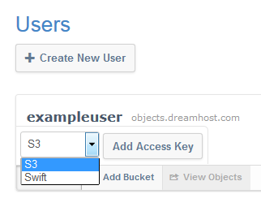

What are Keys in DreamObjects and How Do You Use Them?
Keys
Each user has at least one Key Pair set which consists of the following:
- a 20 character Access Key (similar to a username for a bucket), and
- a 40 character Secret Key (similar to a password for a bucket and automatically generated).
The panel uses these credentials to access your buckets and objects, or in the case of Swift, to obtain a Swift token for future access.
To view your keys, click on your username:
- Most third party clients like Cyberduck, as well as APIs and tools that are written using the API, also use these credentials to gain access to the DreamObjects programmatic cluster.
- A user can have multiple keys to provide fine grain access.
- Removing a key pair removes access for any application using it.
Copying your Access Key
As a convenience, when you click an Access Key or Secret Key the text is selected (though not copied to the clipboard). Once the key is highlighted, you can copy it by clicking CTRL + C on your keyboard and then paste it by clicking CTRL + V.
Adding a Key Pair
Either collapse your User object, or scroll to the bottom of your expanded User object to find the User Controls.

- Click the Add Key button.
A drop-down list appears allowing you to choose S3 or Swift:

- Select either S3 or Swift.
- If you select S3, proceed to Step 5.
- If you select Swift, an additional field appears indicating that you must create a Sub-user name. DreamObjects Sub-users have full control, and are used in combination with the Secret Key to obtain a Swift token for future access.

Enter a Sub-user name.
- Click the Add Access Key button.
An Access Key is added.
Deleting a Key Pair
Navigate to the Key Pair you wish to delete and then locate the Remove Key button on the right-hand side of that row.
- Click the Remove Key button.
A confirmation dialog box opens:
Important
Deleting the Key Pair will result in a loss of access for all clients and scripts that have been using that Key Pair.
- Click the Remove button.
The Key Pair is deleted.